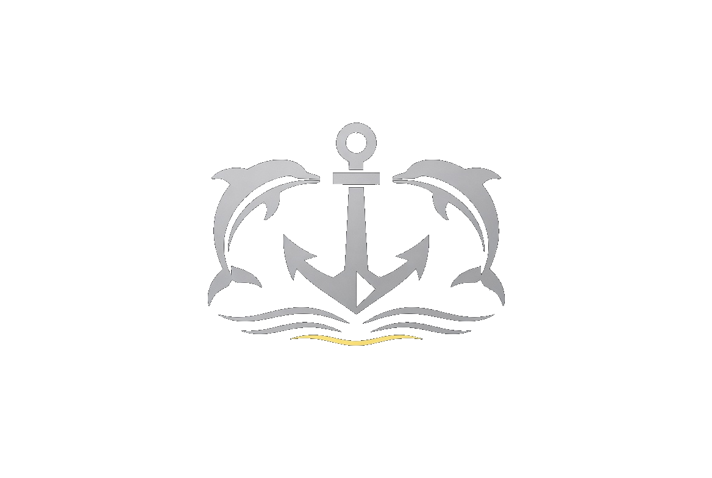

DOLPHIN CODE
Der Banter-Code der U-Boot-Fahrer · 1976 · Beta 3
Geschichte
Rückmeldung
Impressum
Mein Profil
Zur Startseite hinzufügen
Alle Kategorien
Batterie & Technik
Übungsbewertungen
Auftauchen & Rückzug
Entschuldigungen
Angriffe & Taktik
Soziales
Banter & Sprüche
Aircrew / Fishheads
★ Favoriten
🎲 Zufallscode
Historisches Humor-Material aus dem Jahr 1976 (HMCS Okanagan / Keith Nesbit).
Kein operativer Code. Offizielle Funkdisziplin und Brevity Codes haben immer Vorrang.
App Version: Beta 3